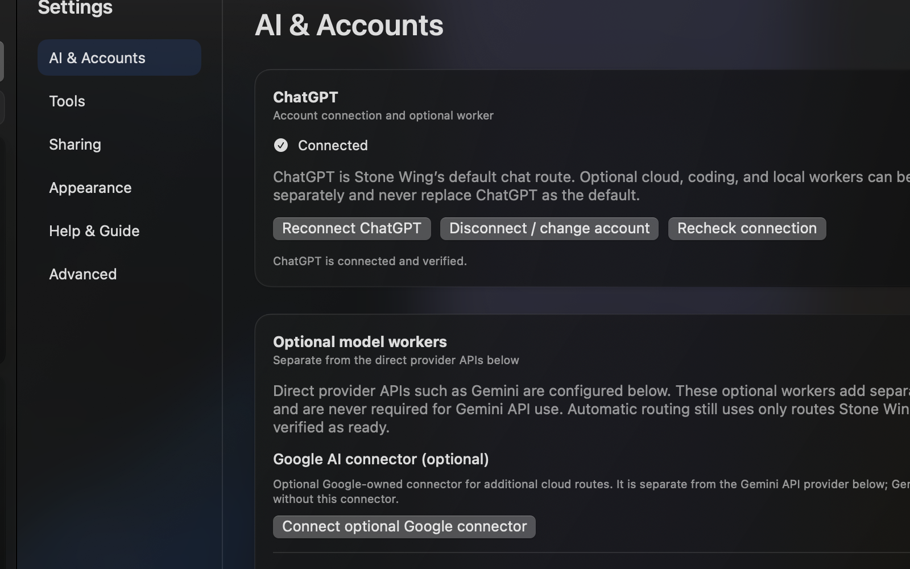
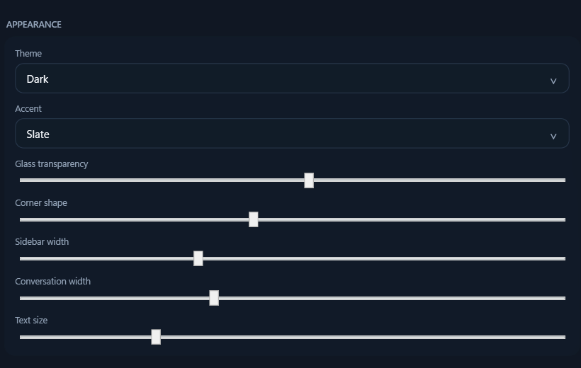

01
Use the right AI without rebuilding your workflow.
Connect supported providers and choose models manually or route work based on the task, while keeping the same project context and workspace.
Bring multiple AI providers, files, MCP tools and authorized computers into one desktop workspace. Stone Wing is built for AI that can do real work — with clear boundaries around what it can inspect, change and execute.
7 days free, then $9.99 CAD/month. Payment method required. Cancel before the trial ends to avoid the first charge. Or buy a $99 CAD one-time license.

Stone Wing is designed around the work that happens after a good answer: choosing the right model, bringing in files and tools, reaching another computer, and deciding what AI is actually allowed to do.
Connect supported providers and choose models manually or route work based on the task, while keeping the same project context and workspace.
Bridge extends Stone Wing to authorized Macs and Windows PCs so approved files, tools and environments do not have to live on one machine.
Separate investigation from mutation, require approval where consequences begin, and verify the reached state instead of assuming success.
These are current application captures, not interface concepts. The goal is a practical desktop workspace rather than a marketing mockup.


Bridge is one of Stone Wing's clearest differences from ordinary multi-model chat. Pair computers you control, then make their approved files, tools and environments available to governed workflows.
BRIDGEStone Wing governance is designed for the moment AI moves from answering into doing. The workspace keeps state, authority, execution and proof distinct so useful automation does not require surrendering control.
Stone Wing is most useful when your work spans models, files, tools or machines and you want that power without turning every provider into a separate workflow.
Keep multiple providers available without treating every model as a separate workspace.
Bring code, files, tools and computer environments into governed model-assisted work.
Move between research, documents, systems and client work while keeping consequential actions explicit.
Use Bridge when the files or tools you need live somewhere other than the machine in front of you.
This comparison is about workflow shape, not a claim that every product in a category has identical capabilities.
| Workflow need | Stone Wing | Typical single-provider chat | DIY multi-tool stack |
|---|---|---|---|
| Multiple AI providers in one workspace | Designed for it | Usually limited | Possible with setup |
| Files + tool context | Integrated workflow | Varies | Usually fragmented |
| Cross-computer Bridge | Built in | Not the core model | Separate remote tooling |
| Explicit action governance | Core design | Varies | Depends on every component |
| One-time purchase option | $99 CAD | Varies | Multiple products / fees |
| Your third-party provider accounts remain yours | Yes | Provider-specific | Yes, but dispersed |
Stone Wing was substantially developed using the same model, file, tool and computer workflow it is built to provide. That is useful evidence of the product direction — not a substitute for independent customer proof.
The site shows current Mac and Windows application captures rather than concept-only artwork.
The development workflow uses explicit state verification, approval boundaries and reached-state reporting.
Customer claims will be published when there are attributable external users and permission to quote them.
Mac and Windows each offer a 7-day free trial that converts to $9.99 CAD/month unless cancelled before the trial ends, plus a $99 CAD one-time license option.
Payment method required. Cancel before the trial ends to avoid the first monthly charge.
Third-party AI/API usage is separate. Review subscription terms, license terms and refund policy.
Payment method required. Cancel before the trial ends to avoid the first monthly charge.
Third-party AI/API usage is separate. Review subscription terms, license terms and refund policy.
No. Stone Wing is the desktop workspace. Third-party provider pricing, free tiers, API usage and limits remain controlled by those providers unless a checkout offer expressly says otherwise.
A payment method is required to start the trial. Unless you cancel before the trial ends, the subscription converts to $9.99 CAD/month and renews monthly until cancelled.
The monthly plan is the lower-commitment path. The $99 CAD one-time license removes the recurring Stone Wing subscription fee for the purchased edition. Updates to that edition are provided while it remains supported; perpetual future feature development is not promised.
Bridge lets Stone Wing work with computers you authorize so approved files, tools and environments can participate in the workflow even when they are on another Mac or Windows PC.
Governance keeps investigation, authority, execution and proof distinct. In practical terms, that means consequential actions can require approval and Stone Wing can verify current and reached state instead of treating a proposed action as completed.
No. Installer/access fulfillment is controlled after checkout rather than exposed as an unrestricted public download. Successful checkout redirects to platform-specific onboarding with next steps.
Use the seller contact information included with your Stripe confirmation or receipt and the instructions on the Stone Wing Support page.
Start with one platform, connect the providers you already use, and add Bridge or tools when the workflow needs them.